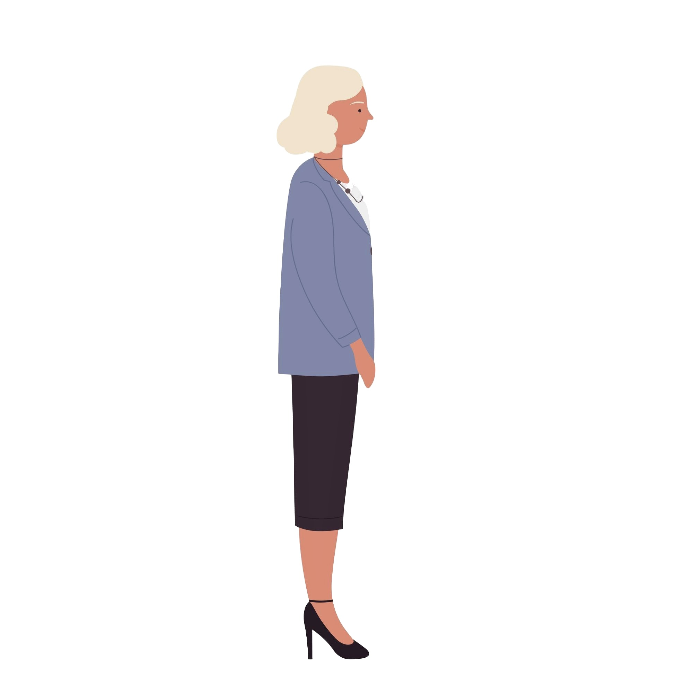
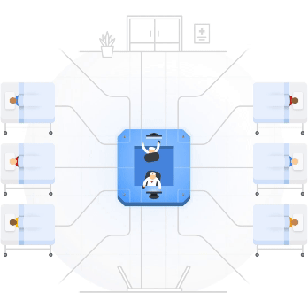

Ich bin Anna, eine KI-Professorin.
Heute begeben wir uns auf eine Entdeckungsreise, um mehr über das überwachte Lernen zu erfahren – einem weit verbreiteten Ansatz des maschinellen Lernens. Dabei lernen Maschinen, Vorhersagen auf Basis vergangener Beispiele zu treffen, genauer gesagt anhand beschrifteter Daten.

KI-Systeme, die mit dem Ansatz des überwachten Lernens entwickelt wurden, werden bereits umfassend eingesetzt.
Sehen wir uns mal einige Beispiele an.

Ist Ihnen schon einmal aufgefallen, dass einige E-Mails automatisch als Spam markiert werden, wenn Sie Ihre E-Mails abrufen?
Dabei handelt es sich um KI-Systeme, die lernen, vorherzusagen, ob eine E-Mail Spam ist oder nicht. Wird eine E-Mail als Spam erkannt, wird sie automatisch in den Spam-Ordner verschoben – das verbessert Sicherheit, Produktivität, finanziellen Schutz und die Verlässlichkeit von Informationen.
https://giphy.com/gifs/spam-1303jprITDKvEQ
Solche Systeme können Fachkräfte im Gesundheitswesen bei Entscheidungen unterstützen und dazu beitragen, die Behandlungsergebnisse zu verbessern sowie die Versorgung individueller zu gestalten.

Google. (n.d.). Health research [GIF]. Google Health. https://health.google/health-research/


Der Ansatz des überwachten Lernens bildet auch die Grundlage vieler weiterer verbreiteter KI-Systeme in unserer Gesellschaft, zum Beispiel:
Wie aber lernen Maschinen, solche Vorhersagen zu treffen? Und wie lassen sich damit fachspezifische Probleme lösen?
Sind Sie bereit, mehr über diese faszinierendeTechnologie zu erfahren?
Dann tauchen wir ein!